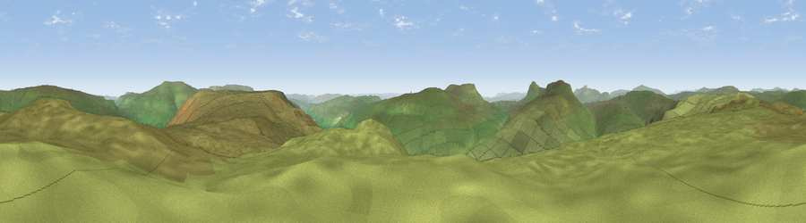

Viewpoint near Buckden
#7731 in England · top 13% of its area beats it · near BuckdenWhere it is
The exact computed spot (SD 89375 76825). Click the marker for map links.
The view, rendered

A 360° render of this exact spot computed from the terrain model, tree cover and land cover — summer colours, afternoon light, calibrated against photographs of famous viewpoints. Real trees, hedges and buildings will differ in detail.
The panorama
Grey silhouette: terrain skyline in each direction (720 bearings, Earth curvature and refraction included). Dashed green: skyline with trees (+15 m) and buildings (+8 m) as obstacles. Blue strip: how far the ground is visible on each bearing.
Where the view opens
Wedge length = distance to the farthest visible ground on that bearing (vegetation-aware). Rings at 10, 25 and 50 km.
What fills the view
99% grassland ·
Angular shares of the visible panorama (visual magnitude), not map area. Landscape diversity 0.02 (0–1 Shannon).
Key numbers
More beautiful places nearby
The staircase of upgrades: each row has a higher view potential than everything closer. Driving times are estimates from straight-line distance, calibrated against real road routing — check an actual route before setting out.
| Place | Direction | Drive | Score |
|---|---|---|---|
| Viewpoint near Buckden | ESE · 1 km | ~4 min | 67.2 |
| Viewpoint near Arncliffe | SSW · 4 km | ~9 min | 68.1 |
| Viewpoint near Horton in Ribblesdale | WSW · 5 km | ~10 min | 72.4 |
| Viewpoint near Horton in Ribblesdale | SSW · 6 km | ~13 min | 74.6 |
| Pen-y-ghent | WSW · 6 km | ~13 min | 75.8 |
| Viewpoint near Buckden | ENE · 7 km | ~14 min | 77.3 |
| Little Ingleborough | WSW · 15 km | ~27 min | 78.8 |
| Viewpoint near Ingleton | W · 15 km | ~27 min | 79.5 |
54.18708, -2.16431 · source: screening · position refined by local search. Computed location — check access rights before visiting.